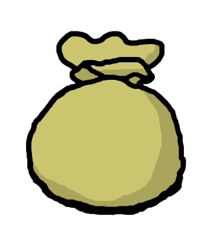

Centipede Game
On this site you can play the Centipede Game.
There are two players switching turns and by continuing they increase the payoff but also the chance the other player quits for getting a better payoff. The name "Centipede" comes from the graph you can draw for the possible payoffs of each player.
Based on Backwards Induction the best play for the first player is to quit on the first round, if they expect, the game won't continue till the end. Player 1 can choose first if to continue or end the game, then it's player 2's turn. It continues till one of the players is ending the game or the last round is reached.
Round:
Player Turn:
P2 Score (CPU):
P1 Score (You):